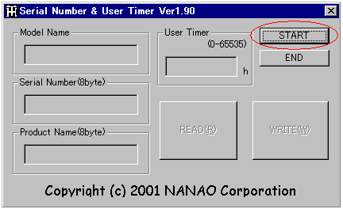
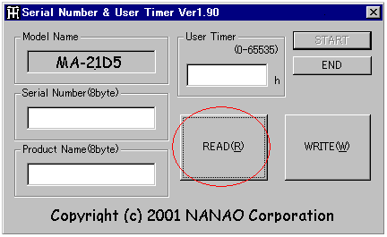
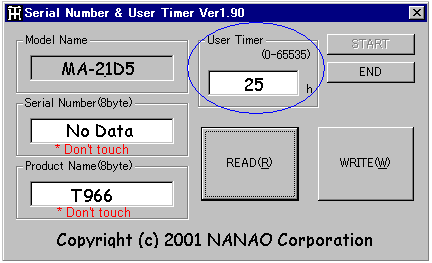
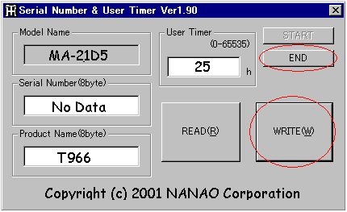

Procedures of how to write
Notice
- Please install rewriting software to the any hard disk
drive.
- After writing is completed, be sure
to check whether the "User timer" is correctly displayed
at "Information" of OSD screen.
|
Set the user time to "0(zero)"
hour". |
- When replacing the CRT panel.
|
|
Set the user time at the one that
of returned the unit. |
- When exchanging the EEPROM for microcomputer (U353).
- When exchanging the PCB(ASSY PCB-MAIN) which has a EEPROM
for microcomputer.
|
|
- Connect the monitor to the PC with the USB cable.
- Start up the "SNEdit190.exe"
and click the "Start" button.

- Click the "READ(R)" and review the information
of the monitor.

- Rewrite the use time at the "User Timer" depending
on the situation.

- Click the "WRITE (W)" and review the inputted information.
- Click the "END" and finish.

- Cycle the power to enable the settings.
|
*1 |
Do not touch the "Product Name (8byte)".
If you touch it, rewrite the product name + space from the left
end. Be sure to input the 8 digits for the product name + space. |
|
*1 Example: T966_ _ _ _ (Input the four (4) spaces) |
|